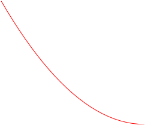

When given a function formula, we often find the first and second derivative formulas to determine behaviors of the given function. In a later lab we will use the first and second derivative formulas to help us graph a function given the formula for the function. One thing we do with the derivative formulas is determine where they are positive, negative, zero, and undefined. This helps us determine where the given function is increasing, decreasing, concave up, concave down, and linear.
ExercisesExercises
Exercise Group.
In the next few exercises, you will construct a function and then answer questions about it.
Interval
\(\fd{f}\)
\(\sd{f}\)
\(\ointerval{-\infty}{-1}\)
Positive
Negative
\(\ointerval{-1}{\infty}\)
Positive
Positive
Table4.6.1.
Figure4.6.2.\(y=\fe{f}{x}\)
1.
Draw onto Figure 4.6.2 a continuous function \(f\) that has a horizontal tangent line at the point \(\point{-1}{2}\) along with the properties stated in Table 4.6.1.
2.
Given the conditions stated in Exercise 4.6.1, does it have to be the case that \(\fe{\sd{f}}{-1}=0\text{?}\)
3.
Is \(f\) increasing at \(-1\text{?}\) How do you know?
4.
Can a continuous, everywhere differentiable function satisfy the properties stated in Table 4.6.1 and not have a slope of zero at \(-1\text{?}\) Draw a picture that supports your answer.
Exercise Group.
In the next few exercises, you will construct a function and then answer questions about it.
Interval
\(\fd{g}\)
\(\sd{g}\)
\(\ointerval{-\infty}{-1}\)
Positive
Positive
\(\ointerval{-1}{\infty}\)
Positive
Negative
Table4.6.3.
Figure4.6.4.\(y=\fe{g}{x}\)
5.
Draw onto Figure 4.6.4 a continuous function \(g\) that has a vertical tangent line at the point \(\point{-1}{2}\) along with the properties stated in Table 4.6.3.
6.
Given the conditions stated in Exercise 4.6.5, does it have to be the case that \(\fe{\sd{g}}{-1}\) is undefined?
7.
Is \(g\) increasing at \(-1\text{?}\) How do you know?
8.
Can a continuous, everywhere differentiable function satisfy the properties stated in Table 4.6.3 and not have a vertical tangent line at \(1\text{?}\) Draw a picture that supports your answer.
Exercise Group.
In the next few exercises, you will construct a function and then answer questions about it.
Interval
\(\fd{k}\)
\(\sd{k}\)
\(\ointerval{-\infty}{-1}\)
Negative
Positive
\(\ointerval{-1}{\infty}\)
Positive
Negative
Table4.6.5.
Figure4.6.6.\(y=\fe{k}{x}\)
9.
Draw onto Figure 4.6.6 the graph of a continuous function \(k\) that passes through the point \(\point{-1}{2}\) and also satisfies the properties stated in Table 4.6.5.
10.
At what values of \(x\) is \(k\) nondifferentiable?
Exercise Group.
You should know by now that the first derivative continually increases over intervals where the second derivative is constantly positive and that the first derivative continually decreases over intervals where the second derivative is constantly negative. A person might infer from this that a function changes more and more quickly over intervals where the second derivative is constantly positive and that a function changes more and more slowly over intervals where the second derivative is constantly negative. We are going to explore that idea in this problem.
11.
Suppose that \(\fe{V}{t}\) is the volume of water in an ice cube (mL) where \(t\) is the amount of time that has passed since noon (measure in minutes). Suppose that \(\fe{\fd{V}}{6}=0\,\frac{\text{ml}}{\text{min}}\) and that \(\fe{\sd{V}}{t}\) has a constant value of \(-0.3\,\frac{\sfrac{\text{ml}}{\text{min}}}{\text{min}}\) over the interval \(\cinterval{6}{11}\text{.}\) What is the value of \(\fe{\fd{V}}{11}\text{?}\) When is \(V\) changing more quickly, at 12:06 pm or at 12:11 pm?
12.
Referring to the function \(V\) in Exercise 4.6.11, what would the shape of \(V\) be over the interval \(\cinterval{6}{11}\text{?}\) (Choose from options Figure 4.6.7.(a)–Figure 4.6.7.(d).)
(a)
(b)
(c)
(d)
Figure4.6.7.
13.
Again referring to options Figure 4.6.7.(a)–Figure 4.6.7.(d), which functions are changing more and more rapidly from left to right and which functions are changing more and more slowly from left to right? Which functions have positive second derivatives and which functions have negative second derivatives? Do the functions with positive second derivative values both change more and more quickly from left to right?
14.
Consider the signs on both the first and second derivatives in options Figure 4.6.7.(a)–Figure 4.6.7.(d). Is there something that the two functions that change more and more quickly have in common that is different in the functions that change more and more slowly?
Exercise Group.
Resolve each of the following disputes.
15.
One day Sara and Jermaine were working on an assignment. One question asked them to draw a function over the domain \(\ointerval{-2}{\infty}\) with the properties that the function is always increasing and always concave down. Sara insisted that the curve must have a vertical asymptote at \(-2\) and Jermaine insisted that the function must have a horizontal asymptote somewhere. Were either of these students correct?
16.
The next question Sara and Jermaine encountered described the same function with the added condition that the function is never positive. Sara and Jermaine made the same contentions about asymptotes. Is one of them now correct?
17.
At another table Pedro and Yoshi were asked to draw a continuous curve that, among other properties, was never concave up. Pedro said “OK, so the curve is always concave down” to which Yoshi replied “Pedro, you need to open your mind to other possibilities.” Who’s right?
18.
In the next problem Pedro and Yoshi were asked to draw a function that is everywhere continuous and that is concave down at every value of \(x\)except\(3\text{.}\) Yoshi declared “impossible” and Pedro responded “have some faith, Yosh-man.” Pedro then began to draw. Is it possible that Pedro came up with such a function?
Exercise Group.
Determine the correct answer to each of the following questions. Pictures of the situation may help you determine the correct answers.
19.
Which of the following propositions is true? If a given proposition is not true, draw a graph that illustrates its untruth.
If the graph of \(f\) has a vertical asymptote, then the graph of \(\fd{f}\) must also have a vertical asymptote.
If the graph of \(\fd{f}\) has a vertical asymptote, then the graph of \(f\) must also have a vertical asymptote.
20.
Suppose that the function \(f\) is continuous, concave down, and is such that \(\fe{f}{7}=5\) and \(\fe{\fd{f}}{7}=3\text{.}\) Which of the following is true?
\(\displaystyle \fe{f}{9}\lt11\)
\(\displaystyle \fe{f}{9}=11\)
\(\displaystyle \fe{f}{9}\gt11\)
There is not enough information to determine the relationship between \(\fe{f}{9}\) and \(11\text{.}\)